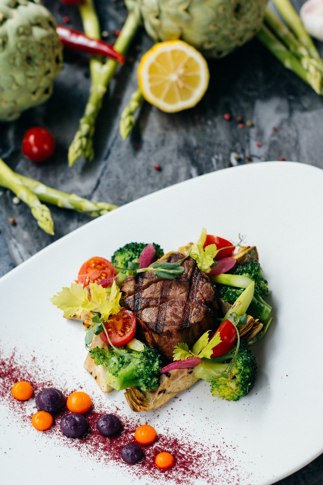

ステーキ
ステーキ用肉に包丁の背で刻みを入れ、塩と胡椒を振る (塩は多めで結構)
ビニール袋に肉を入れ、オリーブオイルを入れ、まんべんなくもみ上げる。
フライパンにサラダ油をご塗り、強火で肉の表面をやく
両面を焼いた後、バターとニンニクを入れ好みの焼き加減に仕上げ。
ステーキ用肉に包丁の背で刻みを入れ、塩と胡椒を振る (塩は多めで結構)
ビニール袋に肉を入れ、オリーブオイルを入れ、まんべんなくもみ上げる。
フライパンにサラダ油をご塗り、強火で肉の表面をやく
両面を焼いた後、バターとニンニクを入れ好みの焼き加減に仕上げ。